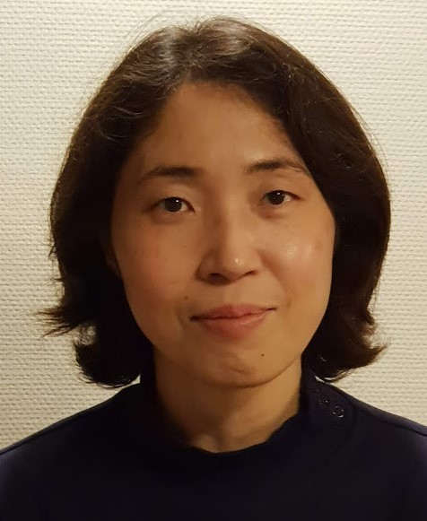

|
|
|
|
|
Hyewon Seo (서혜원, 徐慧源) pronounced as "Heh-one Suh"
 |
Affiliation:
Address:
Contact: email: seo_AT_unistra.fr |
I am a permanently posted CNRS (French National Scientific Research Center) Research director with HDR degree (The highest academic degree in France that allows you to be a supervisor for PhD candidates) working at ICube (Laboratoire des sciences de l'ingénieur, de l'informatique et de l'imagerie), Université de Strasbourg. For those who are not familiar with French research system, it is a post equivalent to tenured university professor, with no teaching obligation. Since 2016, I am also an affiliated professor at POSTECH, South Korea.
I was educated in South Korea and hold BSc and MSc degrees in computer science from the Korea Advanced Institute of Science and Technology (KAIST). After obtaining the PhD degree at the University of Geneva (MIRALab) in 2004, I became an assistant professor in the Computer Science and Engineering Department at the Chungnam National University, South Korea. During the period of 2004-2009, I had been supervisor of the Computer Graphics Laboratory there until I moved to France.
My research interest centers primarily around 3D/4D shape analysis (shape similarity, segmentation, correspondence finding, etc.) and modeling (representation, reconstruction, etc.), with focus on human data. I have also worked on data-driven (learning-based) methods for shape estimation and motion generation, texture mapping, and sketch-based shape reconstruction, among others. So far, I have authored about 60 published articles in international journals and conferences, 4 book chapters, and 3 patents.
I have served several editorial boards for international journals, among them is The Visual Computer journal (Springer Nature) where I have been an associate editor-in-chief (2016-2020). I also serve as PC member or reviewer for several international conferences, have participated in the organization of several international conferences including Eurographics 2014 (Strasbourg, local organization member), Computer Graphics International 2015 (Strasbourg, conference co-chair), Symposium on Solid and Physical Modeling 2020 (on-line, conference co-chair), and Shape Modeling International 2021 (on-line, local organization chair). During 2012-2016, I worked for the national committee of CNRS as an elected member.
Since 2021, I am co-leading a new research team Machine Learning, Modeling & Simulation (MLMS).
May 2025 – Will present our paper on "Shape Conditioned Human Motion Diffusion Model with Mesh Representation" at Eurographics, London.
April 2025 – Presented our work at Korea-EU Horizon Europe Researchers Networking Forum..
April 2025 – Reviewing papers for CASA2025, CGI2025, SPM2025, and MICCAI2025.
January 2025 – Accepted to engage myself to the CASA 2025 conference, as program chair.
December 2024 – Pierre and Boyang has defended their PhDs successfully. Congratulations to the two young doctors!
October 2024 – Presenting our works at MICCAI and Pacific Graphics...
August 2024 – The collaborative project GarSeM has selected for financement by ANR!
August 2024 – Presenting our work on Gait Video Analysis work at EKC 2024 conference at Warwick, UK.
August 2024 – Our paper "Inverse Garment and Pattern Modeling with a Differentiable Simulator" has been conditionally accepted for Pacific Graphics 2024.
July 2024 – Presenting our work on the inverse garment and pattern modeling at the MIRALab workshop at CGI conference 2024 at Geneva, Switzerland.
June 2024 – Our paper "Enhancing Gait Video Analysis in Neurodegenerative Diseases by Knowledge Augmentation in Vision Language Model" has been accepted for MICCAI 2024!
October 2023 – Our paper "Video-Based Gait Analysis for Assessing Alzheimer’s Disease and Dementia with Lewy Bodies" won the best student paper award at the Applications of Medical AI workshop at MICCAI conference at Vancouver, Canada. Congratulations Diwei!
October 2023 – Pierre Galmiche presented our paper "Groupwise Shape Correspondence Refinement with a Region of Interest Focus" at Pacific Graphics.
August 2023 – I am visiting and giving talks to East China Jiaotong University and KAIST.
June 2023 – Our paper to IEEE ICIP has been accepted.
June 2023 – I am organizing KAIST-ICube workshop on AI in June!
April 2023 – Our IEEE RO-MAN workshop on "Surgical Robots, Robot vision, and 4D Human Models for Healthcare" has been accepted!
March 2023 – 5th Human4D workshop will be held at Strasbourg.
January 2023 – I will serve the program committee for the SPM 2023, CASA 2023, and CGI 2023 conferences, as well as 3DOR Workshop.
January 2023 – I will serve the selection committee for a professor position at the University of Lille. We are recruting an assistant professor too! Please contact me if you are interested in.
December 2022 – Attending the SIGGRAPH Asia conference in South Korea! Boyang Yu will commit a short visiting research at KAIST afterwards.
November 2022 – Prof. Kwangyun Wohn will visit us and give a seminar at the IHU conference room.
October 2022 – HCERES (National evaluation committee members) will visit the ICube lab. Hopefully, this evaluation is only once every 5 years!
September 2022 – 4th Human4D workshop will be held at Lille.
September 2022 – The mid-thesis committee of Diwei will be held.
September 2022 – Shengjie Jiang, a new PhD student will join us.
July-August 2022 – Traveling to South Korea for several reserach visits and the KCCV conference.
July 2022 – Our project partners from ETRI will visit us!
July 2022 – Chairing a session at CASA 2022 and EKC 2022. Giving talks too!
June 2022 – I have visited ICANS for an on-going- and a future project.
June 2022 – The mid-thesis committee of Boyang has been held.
May 2022 – The mid-thesis committee of Pierre has been held.
May 2022 – Participating to the selection committee of a professor at the University of Strasbourg.
March 2022 – 3rd Human4D workshop has been held at Grenoble.
March 2022 – Participating to the mid-thesis committee of Perrine Solt.
March 2022 – The bi-national project "RoSaCo: Groupement des équipes associées de Robotique et IA pour la Santé en Corée du Sud" has been selected by the INS2I of CNRS!
February 2022 – 3 Master internship students have arrived. Welcome!
February 2022 – Undergoing a report season .. Writing several reports! (HCERES, annual report to CNRS, etc.)
January 2022 – I will serve the selection committee for a professor position at the University of Strasbourg.
January 2022 – I will serve the program committee for the SPM 2022 conference.
January 2022 – I will serve the selection committee for a professor position at the University of Strasbourg.
November 2021 – Our bi-national project "HuMoCar:Human Model for Real-World Human Cognition by Care Robots" with the South Korean partner ETRI has been setup!
November 2021 – Human4D workshop has been held at Lyon.
October 2021 – Diwei Wang, a new PhD student (project ArtIC), will joint us. Welcome!
September 2021 – Our paper on DSNet has been presented at CGI conference. I am also chairing a session at CGI 2021.
August 2021 – I will visit Electronics and Telecommunications Research Institute (ETRI), KAIST, and POSTECH (South Korea).
July 2021 – Dr. Maia Kim, Principal Researcher from the Electronics and Telecommunications Research Institute (ETRI) has visited us.
May 2021 – Boyang Yu, a new PhD student, will join Human4D project. Welcome!
May 2021 – 2 Scientific days (Journées scientifiques) of Human4D projet will be organized!
April 2021 – I will give a talk on our work on "Dynamic skin deformation prediction by Recurrent Neural Network" at the Data Science and AI Workshop, organized by ICube laboratory.
March 2021 – I am giving a seminar on our work on "Dynamic skin deformation prediction by Recurrent Neural Network" to the MLMS team members.
March 2021 – 2 Master students will join us to do their master internship with me.
February 2021 – I will serve CGI 2021 and SPM 2021 as program committee member.
January 2021 – I will co-lead a new research team Machine Learning, Modeling & Simulation (MLMS) at the ICube laboratory!
December 2020 – I've been elected as a member of Council of ICube laboratory.
November 2020 – Celia Enderlin will present her PhD work on "DeepFold : deep learning for protein fold recognition" at AI for Healthcare ICube-IHU Workshop.
November 2020 – Human4D M+10 meeting will be held, on-line.
November 2020 – I will give a seminar on "Modeling static and dynamic shape data" at IMAGeS team.
October 2020 – Happy to welcome Pierre Galmiche, who has won a French government scholarship for his PhD on modeling the womens' breast’s shape and appearance.
September 2020 – I will attend as jury member the PhD defense of Emmanuel Biabiany at the Univ Antilles.
July 2020 – Cédric Bobenrieth will work as an assistant professor at ECAM (L'École Catholique d'Arts et Métiers) Strasbourg starting from this autumn.
July 2020 – Cédric Bobenrieth has presented our work on 'Descriptive: Interactive 3D Shape Modeling from a Single Descriptive Sketch' at journées du Groupe de Travail en Modélisation Géométrique 2020.
June 2020 – I've won the national concours for a research director (DR) position at CNRS!
June 2020 – SPM (Symposium on Solid and Physical Modeling) and SMI (Shape Modeling International) has been successfully held, with 17 paper sessions, 2 poster sessions, CGAL- and SOFA- workshops, 4 keynotes, and 1 Bezier lecture. Many thanks to all participants and conference-, program-, and session chairs!
June 2020 – Our paper "Descriptive: Interactive 3D Shape Modeling from a Single Descriptive Sketch" to Computer Aided Design has been accepted for publication!
April 2020 – Our institutional project ArtIC (Artificial Intelligence for Care) has been accepted, and has obtained 25 half fundings for PhDs!
March 2020 – SPM (Symposium on Solid and Physical Modeling) and SMI (Shape Modeling International) will be held 100% on-line this year!
March 2020 – CGI (Computer Graphics International) has been delayed to 20-23 October. A special track will be organized for MIRALab alumni!
February 2020 – The Human4D website is now open!
February 2020 – 2 Master students will join us to do their master internship.
January 2020 – Kickoff meeting of Human4D project has been held at Strasbourg.
December 2019 – Cedric Bobenrieth has defended his PhD entitled "Modélisation géometrique par croquis" at the University of Strasbourg.
November 2019 – I have presented my recent work on "Generating 3D Facial Expressions with RNN" at the Data_Science_and_Artificial_Intelligence_Workshop of ICube laboratory.
November 2019 – I have presented our project "Human4D" at the ANR Journée collective de lancement de projets in Paris.
October 2019 – Our collaborative project "Human4D" starts!
October 2019 – Attending ICCV conference at Seoul!
July 2019 – I received "KOFST Scientist of the Year Award" at EKC 2019 conference by the Korean Federation of Science and Technology Societies.
July 2019 – Our collaborative project "Human4D" has been selected by the ANR and will start this October!
July 2019 – I will be chairing "Information Science and Machine Learning" session at EKC 2019, Vienna, Austria.
June 2019 – Symposium on Solid and Physical Modeling (SPM) 2020 will take place at Strasbourg!
July 2019 – I have participated to the panel "Education and AI" at UNESCO (organized by the Delegation of Argentina), Paris.
May 2019 – Our paper on the 3D Mesh animation compression will be presented at ACM I3D, Montreal, Canada.
March 2019 – I gave an invited talk on a learning model for facial animation at the BTC workshop at NTU, Singapore.
December 2018 – I gave a talk on a learning model for facial animation at the ICube deep learning workshop.
October 2018 – Our paper on the reconstruction of flowers from sketches has been presented at Pacific Graphics conference at HongKong.
May 2018 – I participated to the selection committee for an assistant professor at the University of Grenoble.
April 2018 – Our paper on the visual attention for rendered 3D shapes has been presented at Eurographics conference at Delft, Netherlands.
August 2017 – I gave an invited talk at BIEN (The International Conference of Women Scientists and Engineers conference on BT, IT, ET and NT) conference at Seoul, South Korea.
June 2017 – I served the CGI conference as session chair, at Yokohama, Japan.
December 2016 – PhD defense of Miz. Vagia Tsiminaki, where I participate as a jury member, will take place at INRIA Grenoble.
October 2016 – I gave a talk at the 2nd meeting of EKWSEA (Euro-Korean Women Scientists and Engineers Association) in Paris.
October 2016 – Prof. Hyung Yun Choi from Hong-Ik University will visit us and give a seminar.
October 2016 – I will present our paper accepted to Pacific Graphics conference in Okinawa, Japan.
October 2016 – Cédric Bobenrieth starts his PhD work on “Sketch-based Modeling” with us. Welcome!
July 2016 – I will commit a visiting research and give seminars/tutorials at KAIST (sketch-based reconstruction and modeling) and POSTECH (feature description and matching) at South Korea for about 3.5 weeks.
August 2016 – I will give an invited talk at the ISUVR (International Symposium on Ubiquitous Virtual Reality) organized by KAIST.
July 2016 – I participated to the World Congres on Science and Technology held in Seoul, in celebration of the 50th anniversary of KOFST.
June 2016 – I gave a talk at the “Journées Axe Calcul Scientifique”.
June 2016 – The TVC editorial dinner will be organized during CGI2016 conference at Heraklion, Greece.
June 2016 – The national committee of Section 07 of CNRS where I’ve been member during last 4 years will celebrate its end of mandate.
June 2016 – I will give a talk at the “GdR ISIS: Vision et modélisation 3D d’environnements dynamiques”.
May 2016 – I gave a talk at the meeting of work group “maillages”.
Apr 2016 – I participate in the national concours of CNRS (promotion of CR to DR) as member of jury.
Apr 2016 – I gave a short talk at the “Journée d’information” to the PhD students and postdocs at ICube, University of Strasbourg.
Mar 2016 – I participate in the national concours of CNRS (CR) as president of jury.
Mar 2016 – Cedric Bobenrieth started his master thesis research project with me and others.
Feb 2016 – Sylvain Barlet started his master thesis research project with me and others.
Feb 2016 – I start serving TVC (The Visual Computer, Springer) as Associate Editor-in-Chief.
Jan 2016 – I made a demo for CMI (Cursus Master Ingénierie en informatique) students who are visiting ICube laboratory.
Jan 2016 – The TVC editorial board meeting will be held at Geneva, Switzerland.
Nov 2015 – Yvan Pin started his master thesis research project with me.
Nov 2015 – I’ve been invited to the jury member for the PhD defense of Taleb Alashkar 2015.
Jul 2015 – I got appointed as a visiting professor at Dept. Computer Science, POSTECH, South Korea.
June 2015 – CGI’15 has successfully ended. It will be organized in Greece in 2016!
Jun. 2012: Habilité à la Direction de Recherche (HDR) at Université de Strasbourg, France
Dec. 2003: PhD in Computer Science at Université de Genève, Switzerland
Feb. 1998: Master of Science at Dept. of Computer Science in KAIST, Korea
Feb. 1996: Bachelor of Science at Dept. of Computer Science in KAIST, Korea
Dec. 2009 - now: CNRS research scientist (research director since 2020) at ICube (formerly LSIIT), Université de Strasbourg, France
Sep. 2004 – Nov.2009: Assistant professor in Computer Science and Engineering at Chungnam National University, Korea
Supervisor of Computer Graphics and Applications Lab
Sabbatical leave for 1 year (Aug. 2008 - Aug. 2009) at LSIIT, Université de Strasbourg, France
Sep. 2004 – Nov.2009: Post-doctoral researcher at MIRALab, Université de Geneve, Switzerland
Mar. 1999 – Dec. 2003: PhD candidate and research assistant at MIRALab, Université de Geneve, Switzerland
Mar. 1998 – Feb. 1999: Exchange research assistant at MIRALab, Université de Geneve, Switzerland
Swiss Government Scholarship (total grant of 20,000 CHF)
Mar. 1996 – Mar. 1998: Master student and research assistant at VRLab, KAIST, Korea
Local Chair for Shape Modeling International 2020
Conference Co-chair for Symposium on Solid and Physical Modeling 2020
Associate Editor-in-Chief for The Visual Computer (2016-2020)
Conference Chair for Computer Graphics International 2015
Organization committee member for Eurographics 2014
Member of steering committee, Computer Graphics Society (2013~)
Elected member of the French National Committee of Scientific Research (CoNRS: Comité National de la Recherche Scientifique), section 07 (Information Science and Technology) (2012~2016)
Associate editor as a member of editorial board of Computer Animation and Virtual Worlds (Publisher: Wiley, 2012~), Journal of Korean Society of CAD/CAM Engineers (Korea CAD/CAM association) 2008~, International Journal of Contents (Korea Contents Association) 2009~2012, Journal of Korea Contents Association (Korea Contents Association, 2008~2012).
Scientific Program Committee for Computer Graphics International (2006~) Computer Animation and Social Agents (previously Computer Animation, 2006~), Int’l Conference on Virtual Storytelling 2005, Korean Annual Conference on Human-Computer Interaction (2007~)
Academic committee, Session chair, and Local organizing committee of Europe-Korea Conference on Science and Technology 2011
Reviewer for ACM Transactions on Graphics, IEEE Computer Graphics & Application, Computer-Aided Design, Computer Graphics Forum, Computers in Industry, IEEE Int'l Conference on Image Processing
Evaluator for several Korean national projects funded by KRF (Korea Research Foundation), ADD (Agency for Defense Development), KATS (Korean Agency for Technology and Standards).
KOFST Scientist of the Year Award, the Korean Federation of Science and Technology Societies, July 2019
Bonus for scientific excellence (Prime d'excellence scientifique) 2013-2017 (CNRS)
Cum Laude Poster Award: (with4 co-authors) Analysis of Lines of Non-Extension on Lower Body Surface Based on 3D Body Scans, 2009 Summer Conference of Korean Association of Human Ecology, May 2009
Best paper award: (with 7 co-authors) Functional Clothing Design based on the 3D skin lines of Non-Extension, Autumn Annual Conference of the Korean Society of Living Environment System, Nov 2010
ArtIC (Artificial Intelligence for Care): (2020.09-2024.08), funded by French National Research Agent: l'Agence Nationale de la Recherche (ANR), AI graduate school (Etablissement IA) Program
Human4D: Acquisition, Analysis and Synthesis of Human Body Shape in Motion (2020.01-2024.12), funded by French National Research Agent: l'Agence Nationale de la Recherche (ANR), Collaborative Research Program
ClinMod: Learning-based 3D Tracking of Clinicians using Accurate Animatable Body Models (2014.03 ~ 2016.12), funded by ICube, UMR 7357
Shape Analysis and Registration of People using Dynamic Data (2010.12 ~ 2014.12), funded by l'Agence Nationale de la Recherche (ANR) (Chaire d'Excellence program)
Measurement and analysis of human skin deformation (2010.04 ~ 2011.04), funded by Conseil du Scientifique de Université de Strasbourg (Bonus Qualité Recherche program)
Human Shape Modeling and Dynamic Simulation (2007.08 ~ 2010.07), Funded by Korea Science and Engineering Foundation (KOSEF)(Engineering Research Center project program)
Design Process and Physical Modeling of High Performance Compression Garment Based on Ergonomic Mapping for Dynamic Human Body (2008.09 ~ 2010.08), funded by Korea Science and Engineering Foundation (KOSEF) (Fundamental Research on Specific Aims project program)
Real-Time Skinning Method using Vector Field Based Deformation (2007.08 ~ 2008.07), funded by Korea Research Foundation (KRF) (New Faculty Research project program)
3D Modeling of Self-Occluding Objects from Drawings (2006.07 ~ 2007.06), funded by Korea Research Foundation (KRF)(Excellent Woman Scientists and Engineers project program)
Study on Key Techniques for 3D Engine and Virtual GIS Solutions (2006.07 ~ 2007.02), funded by Korea Ministry of Education and Science’s Brain Korea project program
Data-Driven Shape Model for Human Body Reconstruction from Photos (2005.07 ~ 2006.06), funded by Chungnam National University (New Faculty Research project program)
Engineering design principles of the protective clothing system integrating heat and moisture transfer and dynamic human body modeling (2005.09 ~ 2006.08), funded by Korea Science and Engineering Foundation (KOSEF) (Fundamental Research on Specific Aims project program)`